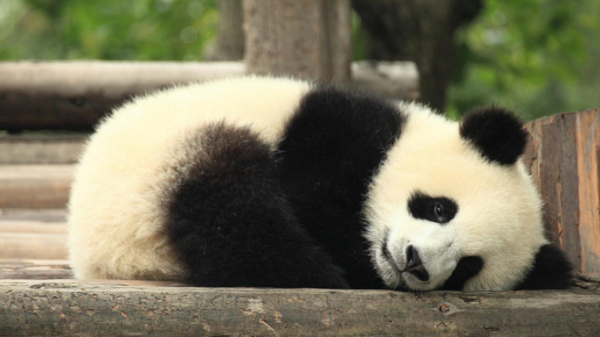

A vida do panda
Sobre os Pandas
O panda é um mamífero originário da China. Ele é conhecido por sua pelagem preta e branca ele tem um corpo pesado e redondo, pernas curtas e uma cauda curta. Sua cabeça é grande, com olhos redondos e orelhas pequenas e sua preferência por bambu.
Habitat dos Pandas
Os pandas-gigantes são encontrados em áreas de florestas de bambu nas montanhas da China central. Eles preferem áreas com vegetação densa e acesso a fontes de água.
Dieta dos Pandas
Os pandas-gigantes são principalmente herbívoros e sua dieta consiste principalmente de bambu. Eles têm um sistema digestivo especializado para digerir o bambu e podem consumir grandes quantidades dele diariamente.
Estado de Conservação
O panda-gigante está classificado como "vulnerável" pela União Internacional para a Conservação da Natureza (IUCN) >devido à perda de habitat e baixa taxa de reprodução.
